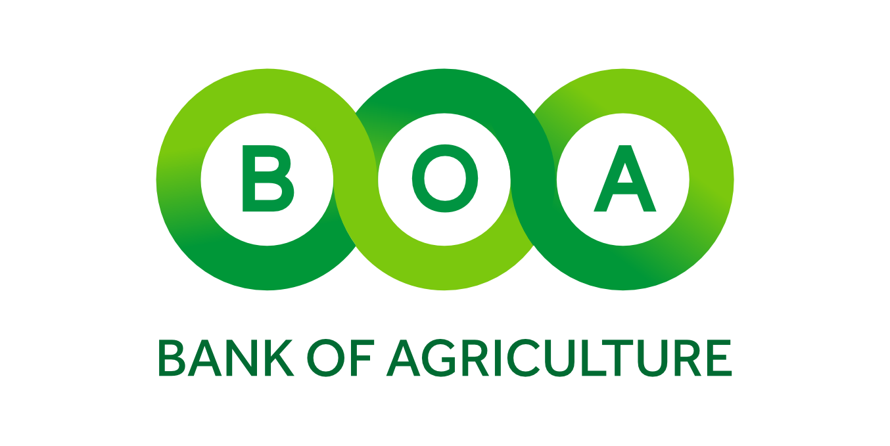

What we will cover today
End-to-end credit origination and risk management platform for Bank of Agriculture
CRMS digitises the complete lifecycle of corporate and retail loan applications — from origination through disbursement — with full governance controls and real-time visibility.
Eight core areas working together as one integrated system
14 defined roles — each with a data-visibility scope (Branch / Global / Own) and a designated workflow function
| Role | Scope | Type | Primary Responsibility |
|---|---|---|---|
| Loan Officer | Branch | Maker | Creates and prepares applications; captures parties, documents, financials, guarantors, collaterals; submits |
| Branch Approver | Branch | Checker | First-level review; approves, returns to Loan Officer, or rejects branch applications |
| Credit Officer | Global | Maker | Full credit analysis; bureau checks; financial ratios; AI advisory; guarantor & collateral review; credit memo |
| HO Reviewer | Global | Checker | Head office review of credit package; approval gate check; circulates loan pack to committee |
| Committee Member | Global | Checker | Reviews digital loan pack; casts formal vote — Approve / Reject / Abstain |
| Final Approver | Global | Checker | Ultimate credit authority (MD/CEO level); final decision after committee |
| Operations | Global | Maker | Issues offer letter; tracks applicant acceptance; prepares disbursement memo; books loan in CBS |
| GM Finance | Global | Checker | Final funds-release authoriser; approves disbursement memo before core banking booking |
| Legal Officer | Global | Maker | Prepares legal opinion; drafts security documents; records legal clearance on collateral |
| Head of Legal | Global | Checker | Countersigns legal opinion before committee circulation; final legal sign-off |
| Risk Manager | Global | Override | Senior authority; bypasses non-strict approval gates with documented justification |
| System Admin | Global | Admin | Full system configuration; user & role management; can perform any workflow action |
| Auditor | Global | Read-Only | Full read-only access to all applications, history, decisions, and audit logs |
| Customer | Own | Self-Service | Retail loan applicant — views and tracks own applications only |
18 stages from application creation to disbursement — corporate loan workflow
Stages 1–4: Loan Officer (Maker) prepares; Branch Approver (Checker) reviews
Stages 5–6: Credit Officer (Maker, 48 hrs) → HO Reviewer (Checker, 24 hrs)
Legal Officer (Maker) → Head of Legal (Checker) — runs concurrently with Credit Analysis
Stages 7–8: HO Reviewer circulates → Committee Members vote — SLA: 72 hours
Stages 9–12: Final Approver (MD/CEO level) → Operations — 24–48 hrs SLA
Every critical decision has a designated maker and an independent checker
| Phase | Maker | Maker's Action | Checker | Gate |
|---|---|---|---|---|
| Origination | Loan Officer | Prepares full application — parties, documents, statements, guarantors, collaterals | — | — |
| Branch Review | Loan Officer | Submits application for review | Branch Approver | Gate 1 |
| Credit Analysis | Credit Officer | Full credit analysis, bureau checks, AI advisory, credit memo | — | — |
| HO Review | Credit Officer | Refers completed analysis for head office review | HO Reviewer | Gate 2 |
| Legal Opinion | Legal Officer | Drafts legal opinion; records legal clearance on collateral | Head of Legal | — |
| Committee | HO Reviewer | Circulates digital loan pack to committee | Committee Members | — |
| Final Approval | Committee | Collective vote result forwarded for final sign-off | Final Approver | Gate 3 |
| Offer Letter | Operations | Issues offer letter; tracks applicant acceptance; conditions checklist | — | — |
| Disbursement | Operations | Satisfies conditions precedent; prepares disbursement memo | GM Finance | Gate 4 |
| Override | Any gate may be bypassed with documented justification | Risk Manager | Override | |
System-enforced checkpoints that block workflow advancement until all conditions are satisfied
Three integrated layers — bureau data, AI advisory, and configurable scoring
Full lifecycle tracking — from proposal through legal perfection; Credit Officer owns approval
Structured upload, categorisation, verification, and AI-assisted analysis
System Admin controls all platform settings — no hardcoding required
Full visibility into pipeline, SLA compliance, team performance, and system activity
Six external system integrations — CRMS as the central credit hub
What CRMS delivers to Bank of Agriculture